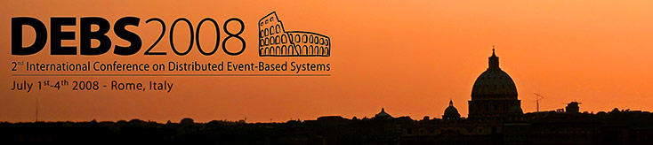

|  | ||||||||||||||||||||||||||||||||||||||||||
DEBS 20082nd International Conference on Distributed Event-Based SystemsJuly 2-4, 2008 - Rome, Italy,
|
| Abstract submission: | March |
| Paper submission: | March |
| Author notification: | May 10, 2008 |
| Final manuscript: | May 31, 2008 |
| DEBS Conference: | July 2-4, 2008 |
Conference Location
The conference will be held at Dipartimento di Informatica e Sistemistica "Antonio Ruberti", Sapienza Università di Roma, Via Ariosto 25 (map), Roma, Italy.
Program Committee
- Raman Adaikkalavan, Indiana University South Bend, USA
- Umesh Bellur, Indian Institute of Technology (IIT), India
- Ken Birman, Cornell University, USA
- Philippe Bonnet, University of Copenhagen, Denmark
- Francois Bry, University of Munich, Germany
- Antonio Carzaniga, University of Lugano, Switzerland
- Sharma Chakravarthy, University of Texas Arlington, USA
- Mani Chandi, California Institute of Technology, USA
- Gregory Chockler, IBM Haifa, Israel
- Mariano Cilia, Intel, Argentina
- Domenico Cotroneo, Università di Napoli "Federico II", Italy
- Geoff Coulson, Lancaster University, UK
- Giampaolo Cugola, Politecnico di Milano, Italy
- Umesh Dayal, HP Labs Palo Alto, USA
- Opher Etzion, IBM Haifa, Israel
- Ludger Fiege, Siemens, Germany
- Mike Franklin, University of California at Berkeley and Truviso Inc., USA
- Avigdor Gal, Technion - Israel Institute of Technology, Israel
- Dieter Gawlick, Oracle, USA
- Jonathan Goldstein, Microsoft Research Lab Redmond, USA
- Rachid Guerraoui, Ecole Polytechnique Fédérale de Lausanne (EPFL), Switzerland
- Vana Kalogeraki, University of California at Riverside, USA
- Anne-Marie Kermarrec, IRISA Rennes, France
- Martin Kersten, Centrum voor Wiskunde en Informatica (CWI), Netherlands
- Michael Lefler, Northrop Grumman Corporation, USA
- Ling Liu, Georgia Institute of Technology, USA
- Jean Philippe Martin, Microsoft Research Lab Cambridge, UK
- Keith Marzullo, University of California at San Diego, USA
- Mira Mezini, Technische Universität Darmstadt, Germany
- Peter R. Pietzuch, Imperial College London, UK
- Beth A. Plale, Indiana University, USA
- Kay Römer, Eidgenössische Technische Hochschule (ETH) Zürich, Switzerland
- Swami Sivasubramanian, Amazon, USA
- Sasu Tarkoma, Helsinki Institute for Information Technology, Finland
- Richard Tibbetts, Streambase, USA
- Maarten Van Steen, Vrije Universiteit, Netherlands
- Paul Vincent, TIBCO, USA
- Seth White, BEA, USA
Organization
| General Chair: | Roberto Baldoni, Sapienza Università di Roma, Italy |
| Steering Committee Chair: | Hans-Arno Jacobsen, University of Toronto, Canada |
| PC Co-Chairs: | Alejandro P. Buchmann, Technische Universität Darmstadt, Germany |
| Sara Tucci Piergiovanni, Sapienza Università di Roma, Italy | |
| Industry Chair: | Eliezer Dekel, IBM Research Laboratory in Haifa, Israel |
| Demo Chair: | Annika Hinze, University of Waikato, New Zealand |
| Tutorial Chair: | Gero Mühl, Technische Universität Berlin, Germany |
| International Relations Co-Chairs: | Antonio Manzalini, Telecom Italia, Italy |
| Tim Bass, SilkRoad Asia Co. Ltd., Thailand | |
| Publicity Co-Chairs: | António Casimiro Costa, Universidade de Lisboa, Portugal |
| Anirüddhā Gokhālé, Vanderbilt University, USA | |
| Michael Olson, California Institute of Technology, USA | |
| Nesime Tatbul, ETH Zürich ,Switzerland | |
| Organizing Co-Chairs: | Vivien Quéma, CNRS INRIA Rhône-Alpes Grenoble, France |
| Leonardo Querzoni, Sapienza Università di Roma, Italy | |
| Publication Chair: | Marin Bertier, IRISA/INSA-Rennes, France |
Submission Guidelines
All papers must represent original and unpublished work that is not currently under review. Each paper will be reviewed by at least three independent referees. Papers will be evaluated according to their significance, originality, technical content, style, clarity, and relevance to the conference. At least one author of each accepted paper is expected to attend the conference.
Three types of paper submissions will be accepted:
- research papers (max. 12 pages): a research paper describes new results that advance the state-of-the-art in basic or applied research.
- industry papers (max. 8 pages): an industry paper describes the design, the experience (in building, deploying and running), or the performance of an industry system. Commonly, the majority of authors on the paper are from industry. Product marketing material will not be accepted as papers.
- demo papers (max. 4 pages): a demo paper reports on an existing research prototype by clearly identifying the original contributions and ideas demonstrated. The authors are expected to prepare a poster and perform a live software demonstration on their own laptop during an exhibit-style conference reception. Any special requirements should be identified in the appendix of the paper.
Submitted papers should clearly indicate on the first page the submission type. Industry submissions will be evaluated by an Industry Committee.
The conference proceedings will be published as part of the ACM International Proceedings Series and will be disseminated through the ACM Digital Library.
The conference adopts a double blind review process, where neither authors nor reviewers know each others' identities.
Papers must not exceed the given number of pages for the respective paper type. The required format for the submission is the ACM SIG Proceedings Style. The author kit containing templates for the required style can be found at http://www.acm.org/sigs/pubs/proceed/template.html. The author(s) name(s) and address(es) must not appear in the body of the paper, and self-references should be in the third person. This is to facilitate a double-blind review process. Please apply the ACM Computing Classification categories and terms, which can be found at http://www.acm.org/class/1998/.